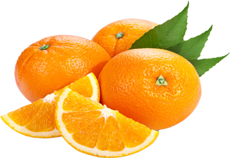

কমলার পরিচিতি
কমলা একটি সুস্বাদু ও সহজলভ্য ফল।চোখ ধাধানো রঙ ও পুষ্টিগুণে ভরপুর বলে এই ফলটি সবারই খুব পছন্দ। ফল হিসেবে, জুস করে কিংবা অনেক রান্নাতেও কমলা ব্যবহার করা হয়। প্রতিদিন কমলা খেলে শরীরের নানান সমস্যা ও রোগ বালাই থেকে দূরে থাকা যায়। 
কমলার পুষ্টি উপাদান
প্রতি ১০০ গ্রাম কমলাতে আছে ভিটামিন বি ০.৮ মিলিগ্রাম, সি ৪৯ মিলিগ্রাম, ক্যালসিয়াম ৩৩
মিলিগ্রাম, পটাসিয়াম ৩০০ মিলিগ্রাম, ফসফরাস ২৩ মিলিগ্রাম। প্রতিদিন কমলা খেতে অনেকে
পছন্দ করেন না। সেক্ষেত্রে কমলার জুস বানিয়ে খেতে পারেন। এতে স্বাদটাও বাড়বে আবার
পুষ্টিগুণও কমবে না।
কমলালেবুর খোসায় রয়েছে অ্যান্টি-মাইক্রোবিয়াল, অ্যান্টি-ইনফ্লেমেটরি ও অ্যান্টি-ফাঙ্গাল
উপাদান যা আমাদের বিভিন্ন ধরনের পেটের সমস্যা, কাশি বা অ্যাজমার সমস্যা ও লিভারের
সমস্যা থেকে রক্ষা করে।
কমলার জুসের উপকারীতা
কমলাতে প্রচুর পরিমাণে ভিটামিন সি আছে যা শরীরের জন্য প্রয়োজনীয় ভিটামিন সি এর অভাব
পূরণ করে।
কমলার জুসে উপস্থিত ভিটামিন সি দ্রুত সর্দি-কাশি সারিয়ে তোলে।
কমলাতে প্রচুর অ্যান্টি-অক্সিডেন্ট আছে যা ত্বকের সজীবতা বজায় রাখে।
কমলার প্রচুর পরিমাণে ভিটামিন সি যা যে কোনো ক্ষতস্থান দ্রুত শুকাতে সাহায্য করে।
কমলাতে উপস্থিত বিটা ক্যারোটিন সেল ড্যামেজ প্রতিরোধে সহায়তা করে।
কমলাতে উপস্থিত লিমিনয়েড স্তন ক্যান্সার প্রতিরোধে সহায়তা করে।
কমলাতে আছে ভিটামিন বি যা হৃদরোগ প্রতিরোধের জন্য ভালো।
কমলার খোসার উপকারীতা
দূর করে কফ ও পিত্ত সমস্যা-
কমলার খোসার তিতকুটে রসের অন্যতম প্রধান বৈশিষ্ট্য এটি কফের সমস্যা ও পিত্তের যে কোন
ধরনের সমস্যা দূর করে। পাতলা করে কমলার খোসা ছিলে নিন ভেজিটেবল পিলারের সাহায্যে, যেন
নিচের সাদা অংশ না আসে। কিংবা গ্রেটারে ঘষে নিন, মিহি কুচি পাবেন। এই খোসার কুচি রঙ চা
তৈরির সময় দিয়ে দিন। সাথে দিন অল্প একটু আদা। একটু ফুটিয়ে আদা ও কমলার গন্ধ ছড়ালেই পান
করুন চায়ের মত। সাথে দিতে পারেন মধুও। কফ ও পিত্তের সমস্যার প্রতিকার হবে।
পেটের সমস্যায় অত্যন্ত কার্যকর-
কমলালেবুর খোসা হজমের সমস্যার সমাধান করে এবং পেটের সমস্যা সরিয়ে ফেলা হয়। এছাড়া
কমলার খোসা গ্যাস, অম্বল , বমি এবং আম্লিক উদ্গিরণ অপসারণ করতে সাহায্য করে। ক্ষুধা
মন্দা এবং বমি বমি ভাব দূর করতে কমলার খোসার জুড়ি নেই। প্রতিদিন সকালে খোসার মিহি কুচি
এক চা চামচ পরিমাণ মধুর সাথে খেয়ে নিন। কিংবা যোগ করতে পারেন ফ্রুট সালাদেও।
অ্যাজমা ও কাশির সমস্যায়-
কমলার খোসা গুঁড়ো কাশির সমস্যা দূর করে। কমলার খোসা শ্বাস-প্রশ্বাসের সমস্যা ও অ্যাজমা
উপশমে কাজে লাগে। এসব কষ্ট থেকে মুক্তি পেতে নিয়মিত পান করুন কমলার খোসায় তৈরি চা।
কিংবা কমলার খোসা দিয়ে মোরব্বা বা টফি তৈরি করে রাখুন। প্রতিদিন সকালে এই টফি চা পানের
সময় ভালো করে চিবিয়ে খান।
অ্যাসিডিটি দূর করে-
কমলার খোসার তৈরি তেলে রয়েছে অ্যান্টি-মাইক্রোবিয়াল ও অ্যান্টি-ইনফ্লেমেটরি যা পেটের
অ্যাসিডিটি দূরীকরণে সহায়তা করে। এছাড়া এই তেলে রয়েছে ডি-লিমোনেন যা অন্ত্রের স্বাভাবিক
আন্দোলন বজায় রাখে ও লিভার ফাংশন স্বাভাবিক রাখে। অ্যাসিডিটির সমস্যায় কমলার খোসায়
তৈরি এসেনশিয়াল ওয়েল পানিতে দু ফোঁটা মিশিয়ে পান করুন।
ওজন কমাতে সহায়ক-
গবেষণায় দেখা যায় কমলালেবুর খোসা কলেস্টেরল এবং ট্রাইগ্লিসেরাইড দ্রবীভূত পারে। ফলে
যাদের উচ্চমাত্রায় কোলেস্টেরলের সমস্যা আছে এবং যারা ওজন কমাতে চান তাদের জন্য কমলার
খোসা অনেক কার্যকরী। জ্যাম, জেলি বা মারমালেড এর সাথে প্রতিদিন সকালে খেয়ে নিন তাজা
কমলার খোসা। কিংবা পান করুন এই খোসার উপকারিতায় ভরা চা।
ক্যান্সার ও হাড়ের রোগ প্রতিরোধ করে-
এছাড়া কমলার খোসায় একটি ফ্লেভোনয়েড রয়েছে যা ‘হেস্পিরিডিন’ নামে পরিচিত। এবং এটি কোলন
ক্যান্সার এবং অস্টিওপরোসিস বিরুদ্ধে কাজ করে।
অনিদ্রা দূর করতে-
কমলার খোসা গোসলের পানিতে ব্যবহার করলে এটি অনিদ্রা দূর করে। খোসা গুলো কাঁটাচামচ দিয়ে
ভালো করে কেঁচে নিন। তারপর গরম পানিতে ভিজিয়ে রাখুন। পানির তাপমাত্রা কুসুম গরম থাকতে
থাকতে গোসল সেরে নিন। চাইলে মিশিয়ে দিতে পারেন খোসায় তৈরি এসেনশিয়াল অয়েলও।